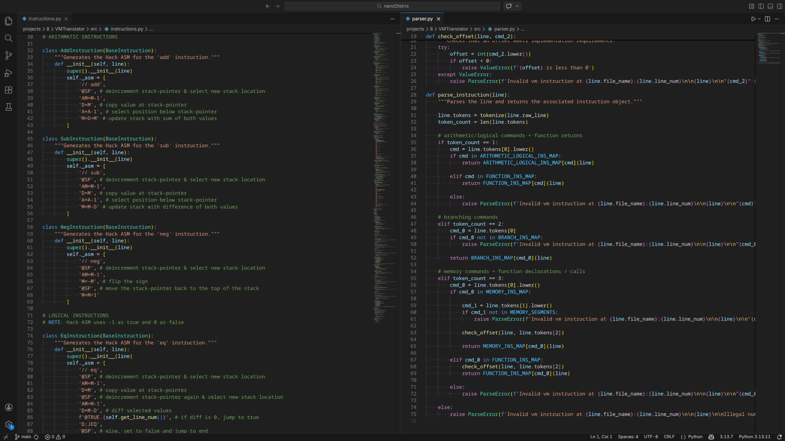

Jack VM Translator
An implementation of the Jack VM Translator for Nand2Tetris Part 2 written in Python. This is an academic project which translates text-based Jack VM code into Hack ASM.
My Role
Developer
Technology
Python
Source Code

An implementation of the Jack VM Translator for Nand2Tetris Part 2 written in Python. This is an academic project which translates text-based Jack VM code into Hack ASM.
Developer
Python
